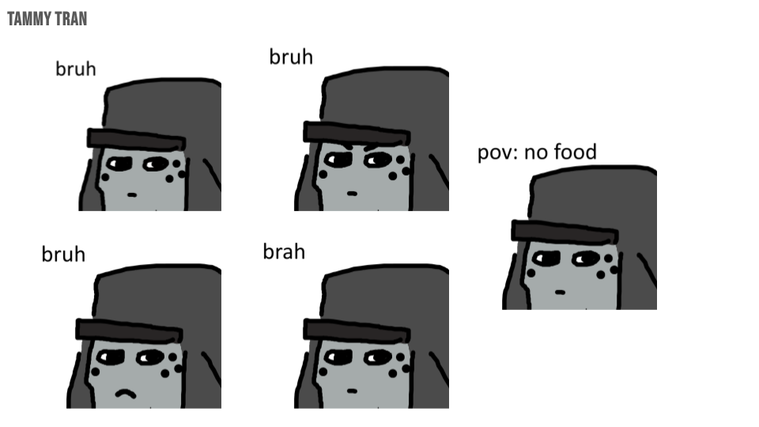
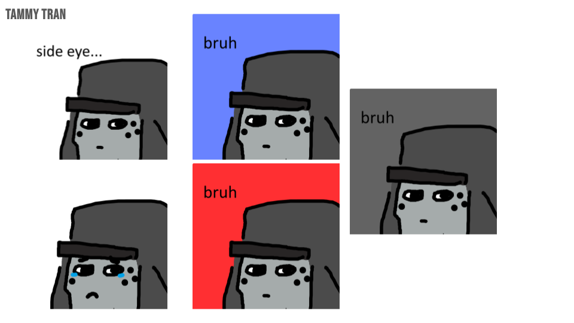

<!DOCTYPE html>
<!-- Latest compiled and minified CSS -->
<link href="https://cdn.jsdelivr.net/npm/bootstrap@5.3.8/dist/css/bootstrap.min.css" rel="stylesheet">

<!-- Latest compiled JavaScript -->
<script src="https://cdn.jsdelivr.net/npm/bootstrap@5.3.8/dist/js/bootstrap.bundle.min.js"></script>
<html>

<nav class="navbar navbar-expand-sm bg-dark navbar-dark">
  <div class="container-fluid">
<span class="navbar-text">Navigation</span>

<ul class="navbar-nav">

<li class="nav-item">
<a class="nav-link" href="index.html"><button type="button" class="btn btn-info">Home</button></a>
</li>
<li class="nav-item dropdown">
  <a class="nav-link dropdown-toggle" href="#" role="button" data-bs-toggle="dropdown"><button type="button" class="btn btn-info">Art 15</button></a>
  <ul class="dropdown-menu  dropdown-menu-end">
    <li><a class="dropdown-item" href="memes.html">10 Memes</a></li>
    <li><a class="dropdown-item" href="synthesia.html">Synthesia</a></li>
	<li><a class="dropdown-item" href="zine.html">Zine Art</a></li>
    <li><a class="dropdown-item" href="movie.html">Final Animation</a></li>
  </ul>
</li>
<li class="nav-item dropdown">
  <a class="nav-link dropdown-toggle" href="#" role="button" data-bs-toggle="dropdown"><button type="button" class="btn btn-info">Art 74</button></a>
  <ul class="dropdown-menu  dropdown-menu-end">
    <li><a class="dropdown-item" href="glitch.html">Glitch Art</a></li>
    <li><a class="dropdown-item" href="meme.html">Meme Mashup</a></li>
    <li><a class="dropdown-item" href="mc.html">3D Minecraft</a></li>
	<li><a class="dropdown-item" href="net.html">Net.Art</a></li>
  </ul>
</li>

</ul>

</nav>
</div>
<br>
<div class="container-fluid">
<div class="alert alert-info">
 <center><h1>My Portfolio</h1>
</div>
<center>


<br>
<br>A quick project that I had done for my art 15 class where I created an original 
<br>meme and created 10 iterations of it! It is very simplistic since I was stuck on
<br>ms.paint for the project. But as a whole, it feels pretty well done otherwise.
<nav class="navbar navbar-expand-sm bg-dark navbar-dark fixed-bottom justify-content-center">
<span class="navbar-text">Created for Art 74</span>
</nav>
</div>
</html>